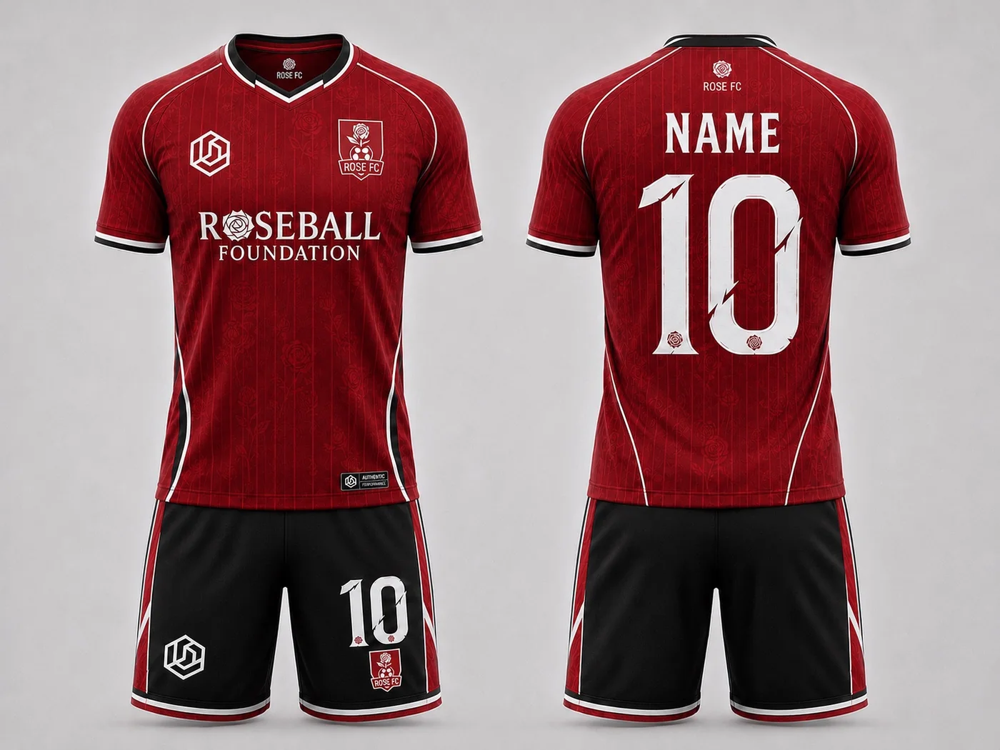
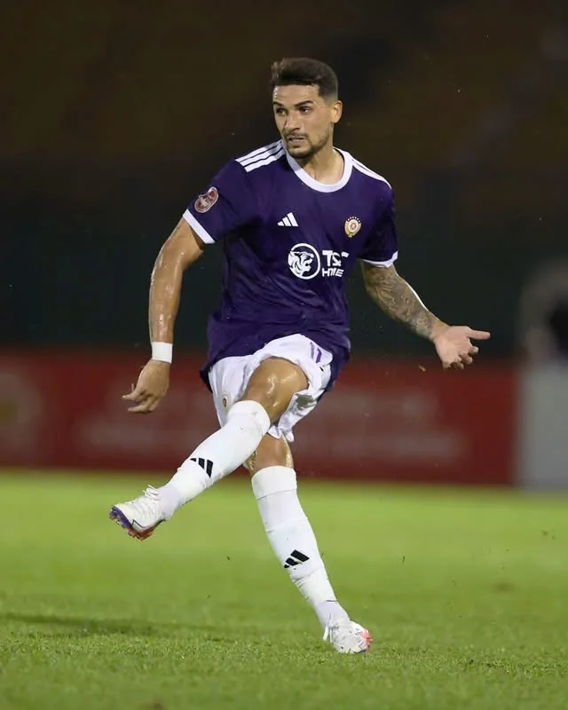
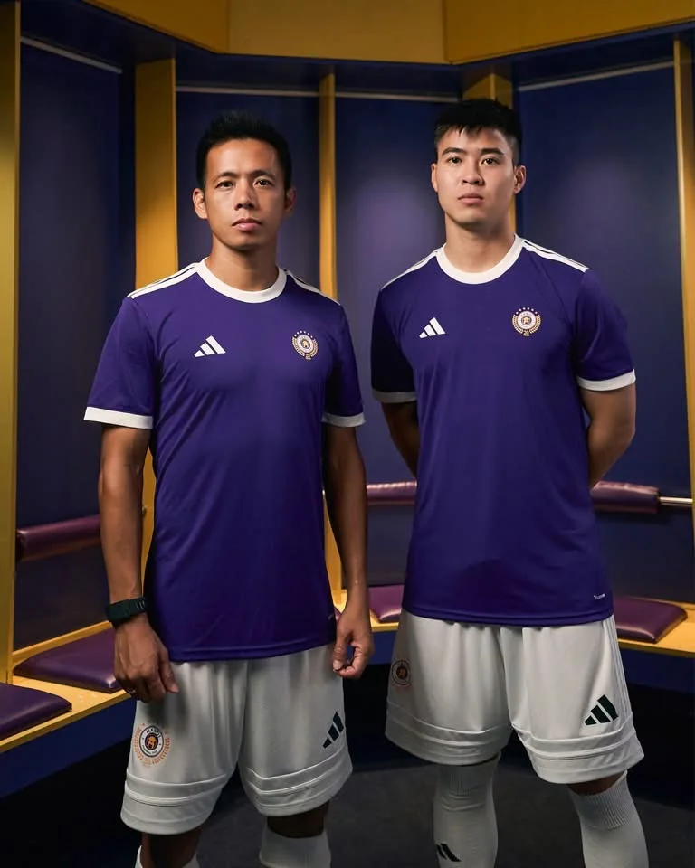
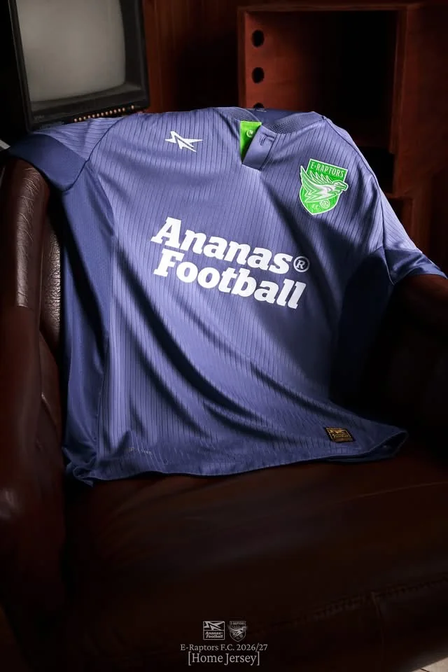
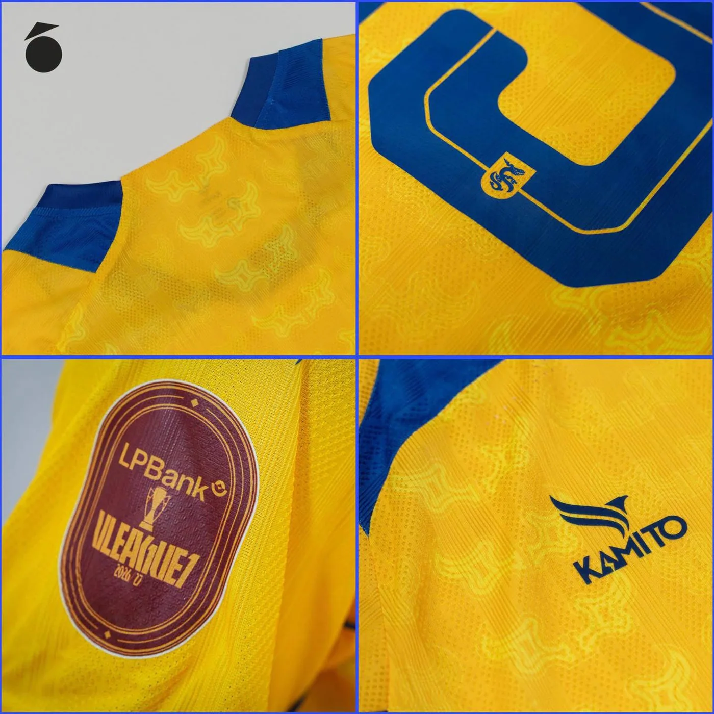

Vì sao áo đấu lại là thứ cơ bản nhất của một đội bóng, dù ở bất kỳ cấp độ nào?
Có những thứ chỉ xuất hiện khi một đội bóng phát triển đến một mức độ nhất định. Nhưng trước rất nhiều kế hoạch lớn, một điều gần như luôn phải có trước: một màu áo chung.

Mẫu áo sân nhà Rose FC mùa giải 2026/27. Với Rose FC, màu áo chung không chỉ là hình ảnh mà còn là một yêu cầu nền tảng trước khi CLB nghĩ tới những bước phát triển lớn hơn. · Ảnh: Rose FC · Sản xuất: Demenino Sport
Có những thứ trong bóng đá chỉ xuất hiện khi một đội bóng phát triển đến một mức độ nhất định: ban huấn luyện, hệ thống dữ liệu, nhà tài trợ, truyền thông, cơ sở tập luyện hay một bộ máy vận hành hoàn chỉnh.
Nhưng có một thứ gần như xuất hiện ngay từ khi một nhóm người bắt đầu muốn trở thành một đội bóng thực sự: một màu áo chung.
Áo đấu nghe có vẻ là chuyện rất nhỏ. Nhưng nhiều khi chính điều nhỏ nhất ấy lại là nền tảng để giải quyết những câu chuyện lớn hơn sau này.
Một nhóm cầu thủ có thể cùng đá bóng mà chưa cần quá nhiều thứ. Nhưng khi tất cả bước ra sân với cùng một màu áo, họ bắt đầu được nhìn nhận như một tập thể, thay vì chỉ là những cá nhân đang chơi cùng nhau.
Từ việc đơn giản nhất: nhận ra đâu là đồng đội
Ở mức cơ bản nhất, áo đấu giúp phân biệt hai đội trên sân. Cầu thủ nhận ra đồng đội. Trọng tài dễ quan sát. Đối thủ và khán giả cũng nhận diện được hai tập thể rõ ràng hơn.
Trong bóng đá phong trào, điều này càng dễ thấy. Một đội có thể chưa có HLV cố định, chưa có sân riêng hay chưa có một hệ thống vận hành hoàn chỉnh. Nhưng nếu mỗi người bước vào sân với một chiếc áo khác nhau, cảm giác về một “đội bóng” vẫn còn rất mờ nhạt.
Ngược lại, chỉ cần cùng khoác một màu áo, hình ảnh của tập thể đã thay đổi rất nhiều.
Ở bóng đá chuyên nghiệp, áo đấu là một phần của cả hệ sinh thái

Ở cấp độ cao nhất, áo đấu không còn chỉ là trang phục thi đấu. Nó còn kết nối đội bóng với thương hiệu thể thao, nhà tài trợ, hình ảnh truyền thông, người hâm mộ và cả thị trường sản phẩm thể thao phía sau.
Một chiếc áo lúc này có thể trở thành một phần của chiến lược hình ảnh, thương mại và cách một CLB xuất hiện trước công chúng.

Đó cũng là điểm rất đặc biệt của áo đấu: nó đưa cái tôi cá nhân vào trong một hình ảnh chung. Cầu thủ có thể khác vị trí, vai trò hay cá tính, nhưng trên sân họ cùng đại diện cho một biểu tượng.
Điều đó không chỉ tồn tại ở bóng đá chuyên nghiệp

Ở bóng đá phong trào có tổ chức, câu chuyện cũng không khác quá nhiều.
E-Raptors FC, một thành viên trong hệ thống VGF, cũng xây dựng cho mình một mẫu áo riêng với thiết kế và cách thể hiện hình ảnh chỉn chu. Đó là một ví dụ cho thấy một đội bóng không cần chơi ở V-League mới có thể nghiêm túc với màu sắc, logo hay cách mình xuất hiện.
Khoảng cách về mặt hình ảnh giữa một CLB phong trào được tổ chức tốt và một đội bóng chuyên nghiệp vì thế có thể nhỏ hơn chúng ta nghĩ.
Có những điều chỉ chiếc áo mới giữ lại được

Áo đấu còn là nơi lưu giữ những chi tiết mà đôi khi chỉ người trong đội mới hiểu hết ý nghĩa.
Một họa tiết, một biểu tượng, một mùa giải đặc biệt, một cột mốc thăng hạng hay một chi tiết nhỏ được đặt ở vị trí rất kín trên áo đều có thể mang theo câu chuyện của CLB.
Khi đó, chiếc áo không còn đơn thuần là một sản phẩm thể thao. Nó trở thành một vật chứa ký ức của một giai đoạn.
Một màu áo chung cũng bắt đầu tạo ra kỷ luật
Khi một đội quyết định nghiêm túc với áo đấu, hàng loạt câu hỏi rất cơ bản bắt đầu xuất hiện.
- Màu sắc của đội là gì?
- Logo được sử dụng thế nào?
- Số áo có được quản lý không?
- Ai đang thuộc đội hình?
- Áo nào dùng cho thi đấu, tập luyện hay di chuyển?
- Ai chịu trách nhiệm đặt áo, kiểm tra size, phát áo và quản lý chi phí?
Những câu hỏi tưởng rất nhỏ ấy lại là những bước đầu tiên của việc vận hành. Từ áo đấu, một đội bóng bắt đầu học cách quản lý danh sách cầu thủ, tài chính, trang thiết bị, hình ảnh và trách nhiệm cá nhân.
Vì vậy, một bộ áo không biến một đội bóng thành chuyên nghiệp ngay lập tức. Nhưng một đội bóng muốn vận hành nghiêm túc rất khó bỏ qua điều cơ bản này.
Với Rose FC, đây là điều tiên quyết
Rose FC hiện cũng đang kêu gọi và từng bước hoàn tất việc để tất cả thành viên cùng sử dụng một mẫu áo chung của CLB trong mùa giải 2026/27.
Bộ trang phục hiện tại do Demenino Sport sản xuất — một thương hiệu thể thao đang đồng hành cùng CLB Lâm Đồng ở V-League 2 theo thông tin Rose FC sử dụng trong bài.
Nhưng với Rose FC, điều quan trọng nhất không nằm ở tên nhà sản xuất hay việc chiếc áo trông đẹp đến đâu. Điều quan trọng là mọi thành viên cùng mặc nó.
Đối với CLB, đây không phải là một lựa chọn mang tính hình thức. Đây là một trong những yêu cầu bắt buộc và tiên quyết nhất trước khi Rose FC nghĩ tới những việc lớn hơn.
Rất khó để nói về bản sắc, tính tập thể, kỷ luật hay một môi trường hoạt động nghiêm túc nếu ngay từ màu áo trên sân vẫn chưa thống nhất.
Một bộ áo có thể có giá vài trăm nghìn đồng. Với một cầu thủ trẻ, đó vẫn có thể là một khoản tiền cần cân nhắc.
Nhưng vài trăm nghìn đồng đó không chỉ mua một món đồ để mặc khi đá bóng. Nó mua một thứ hữu hình để đại diện cho rất nhiều điều vô hình phía sau: cảm giác thuộc về, trách nhiệm, sự đồng nhất, nhận diện, ký ức và niềm tự hào của một tập thể.
Một chiếc áo có thể xuất hiện trong buổi sinh hoạt bình thường hôm nay, trong một trận đấu quan trọng vài tháng sau, rồi nằm lại trong một bức ảnh được nhìn lại nhiều năm sau nữa. Khi ấy, giá trị của nó đã vượt xa giá tiền lúc mua.
Rose FC không cho rằng mặc cùng áo là đủ để biến một nhóm cầu thủ thành một CLB tốt. Nhưng trước khi làm những điều lớn, CLB tin rằng phải làm tốt những điều cơ bản nhất.
Và với Rose FC, cùng khoác một màu áo là một trong những điều cơ bản và bắt buộc đầu tiên.
Một chiếc áo có thể được mua bằng vài trăm nghìn đồng. Nhưng màu áo chung có thể tạo ra những giá trị lớn hơn rất nhiều so với giá tiền của chính chiếc áo đó.